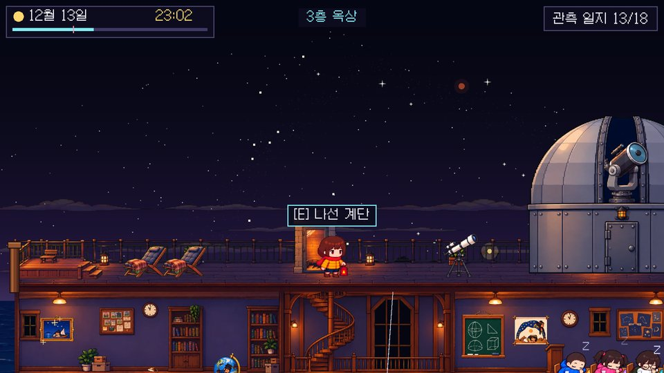
남쪽 작은 섬 어린이천문대의 겨울 캠프. 개기월식이 있는 12월 13일 밤이 끝없이 되풀이된다. 진짜 하늘을 관측해 증거를 모으고, 천문대 물건 속에서 깨어난 옛사람 여섯 명을 아침으로 돌려보내며, 얼굴이 보이지 않던 선생님의 정체를 밝혀라.
| 항목 | 내용 |
|---|---|
| 장르 | 시간 루프 탐험 · 관찰 추리 어드벤처 (픽셀 그래픽, 옆으로 걷는 화면) |
| 한 판 | 한 밤 = 17:00 ~ 07:30 (실제 약 5분). 사람과 이야기하거나 퀴즈·교재를 볼 때는 시간이 멈춤. 해가 뜨면 처음으로 되감기고 관측 일지만 남음 |
| 전체 분량 | 두세 밤에 걸쳐 약 40~60분 (진엔딩까지) |
| 핵심 재미 | ① "몇 시에 어디에 있어야 하지?" 계획 세우기 ② 진짜 하늘을 관측해 증거 찾기 ③ 예측하고, 보고, 설명하는 깨달음 퀴즈 ④ 증거를 골라 옛사람 설득하기 |
| 조작 | ← → 걷기, 점프, E/누르기로 살펴보기. 폰에서는 화면 단추 |
육지에서 배로 한 시간 떨어진 남해의 작은 가상 섬입니다. 위치는 북위 34°, 동경 127.5°로 정했습니다. 가로등이 거의 없어 밤이 되면 별이 쏟아지고, 19:30 마지막 연락선이 떠나면 아침까지 섬에는 캠프 사람들뿐입니다. 남쪽 섬으로 정한 까닭은 둘입니다.
| 항목 | 값 |
|---|---|
| 날짜 | 2xxx년 12월 13일 (게임 속 계산은 2141년, 세차 운동까지 반영). 화면에는 연도를 "2xxx"로만 표시 |
| 해넘이 / 해돋이 | 17:17 서쪽 바다 / 07:30 |
| 보름달 | 17:00 무렵 동쪽에서 떠서 남쪽을 지나 서쪽으로. 가장 높을 때 약 78° |
| 개기월식 | 부분식 시작 21:22 · 개기식 22:20 ~ 23:52 (가운데 23:06) · 부분식 끝 00:50 |
| 북쪽 하늘 | 초저녁에는 카시오페이아자리(W)가 높고, 북두칠성은 북북동쪽 산 뒤. 21:55 무렵 국자 끝 두 별이 산 위로 |
| 남쪽 하늘 | 오리온자리, 시리우스, 오리온대성운(M42). 카노푸스는 23:38 ~ 03:16 (가장 높을 때 01:27, 고도 약 3°) |
| 은하수 | 은하 좌표로 계산해 그림. 보름달 빛에 묻혔다가 개기식 동안 다시 드러남 |
| 밤이 되풀이되어도 남는 것 | 해가 뜨면 지워지는 것 |
|---|---|
| 관측 일지(알아낸 사실), 깨운 손님(다음 밤부터 17:00에 이미 돌아다님), 도운 손님, 우주 주소 조각, 예측 기록 | 이번 밤의 기록(진자 기록, 월식 사진), 손님과 나눈 대화, 주인공의 위치 |
해가 뜨면 하늘의 해·달·별과 시계 바늘이 거꾸로 돌고, 거꾸로 그려지는 일주 사진(밤새 그린 긴 호가 점으로 돌아감)이 나온 뒤 17:00 강의실로 돌아갑니다.
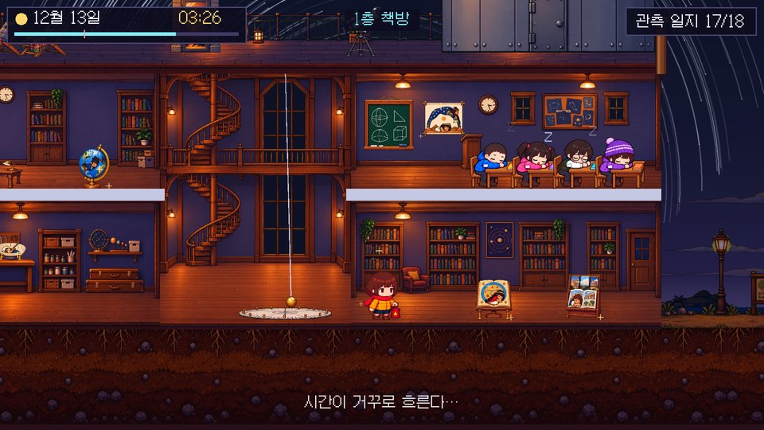
천문대를 옆에서 자른 단면(인형의 집)처럼 보여 줍니다. 밖(마당, 항구)에 있을 때는 외벽이 덮고, 정문으로 들어가면 외벽이 서서히 투명해집니다. 땅은 천문대 아래부터 마당 끝 돌 축대까지 하나로 이어지고, 그 오른쪽이 부두입니다.
| 곳 | 들어 있는 것 | 이야기 속 역할 |
|---|---|---|
| 3층 옥상 | 해넘이 전망대(서쪽, 계단 3칸), 관측 의자 2개(북쪽 하늘), 나선 계단 출구, 달 망원경, 돔(Meade LX200 ACF 16인치) | 하늘 관측의 중심 |
| 2층 선생님 사무실 | 책상과 쪽지, 사진 액자(돌쇠), 지구본(휘), 진짜로 가는 벽시계 | 쪽지를 찾는 곳 |
| 2층 강의실 | 칠판(오늘 밤 하늘 시간표), 판서 그림(케티), 잠든 친구 넷 | 밤이 시작되는 곳 |
| 가운데 홀 | 두 층 높이의 홀, 나선 계단, 2층 다리, 돔에서 1층까지 내려온 푸코 진자 | 층을 오가는 길 |
| 1층 창고·실습실 | 지구 공전 모형, 작업대 위 종이 앙부일구(보리), 실습 선반 | 계절 실험 |
| 1층 책방 | 어린이천문대 교재(안락의자), 교재 지도 받침대(이나), 만화책 진열대(테오), 비밀 책장 | 개념 확인, 진엔딩 입구 |
| 마당 | 가로등, 안내판, 벤치(시간 건너뛰기) | 프롤로그의 선생님 |
| 항구 | 부두 쌍안경, 돌쇠의 배, 섬 연락선(19:30 출항) | 바다와 수평선 관측 |
| 지하 별지기의 방 | 옛 천구도, 낡은 관측 일지와 빨간 손전등, 황동 망원경, 천구의 | 진엔딩 |
| 손님 | 깨어나는 물건 (곳) | 믿음 | 필요한 증거 |
|---|---|---|---|
| 케티 고대 이집트 | 판서 그림 「이집트 사람들의 하늘」 (2층 강의실) | 하늘의 여신 누트가 저녁마다 태양신 라를 삼키고 아침마다 낳는다. 오늘 밤은 라를 낳지 않아 아침이 오지 않는다 | 서쪽으로 지는 해 + 돌아가는 진자 |
| 돌쇠 조선 뱃사람 | 사진 액자 「별빛섬 바다의 북두칠성」 (2층 사무실) | 나침반을 잃었다. 북두칠성은 산에 가렸고, 별들이 밤새 도니 별 하나를 믿어도 될지 모르겠다. 21:30 물때 전에 떠나야 한다 | 카시오페이아로 북극성 찾기 + 도는 하늘(장노출) |
| 이나 바빌로니아 서기 견습생 | 교재 「옛사람들의 세계 지도」 (1층 책방) | 땅은 바다에 둘러싸인 원반이고, 배는 바다 끝에서 떨어진다 | 수평선 너머의 배 |
| 휘 한나라 천문 기록관 | 지구본 (2층 사무실) | 하늘은 둥글고 땅은 네모나다(천원지방). 한 번 본 것은 믿지 않고 쌓인 기록만 믿는다 | 언제나 둥근 그림자 (월식 사진 3장) |
| 테오 아리스토텔레스의 제자 | 그리스로마신화 만화책 (1층 책방) | 땅이 둥글다고 믿지만, 스승이 말한 "남쪽으로 가면 못 보던 별이 보인다"를 직접 보지 못했다. 힌트를 주는 형 | 남쪽의 카노푸스(노인성) |
| 보리 조선 농사꾼의 딸 | 종이 앙부일구 (1층 창고 작업대) | 여름이 더운 건 해가 가까이 와서, 겨울이 추운 건 멀어져서다 | 가장 가까운 날은 한겨울 + 기울어진 자전축 |
손님은 물건에 말을 걸어야 깨어납니다. 깨어난 물건은 빈 모습이 되고, 손님을 도우면 물건으로 돌아가 금빛으로 빛납니다. 증거는 필요한 것만 정확히 골라야 하며, 엉뚱한 증거를 내면 하트(믿음) 3개 중 하나를 잃습니다.
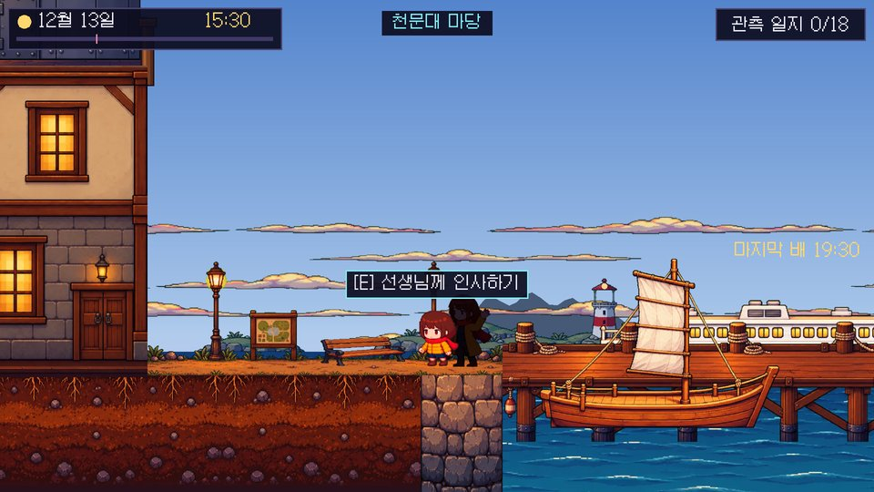
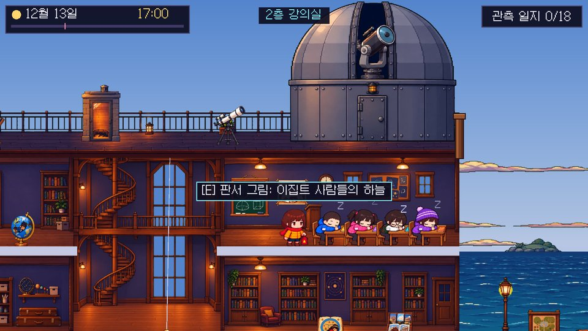
선생님어서 와. 어린이천문대 겨울 캠프에 온 걸 환영해.
선생님오늘 밤엔 특별한 일이 있어. 보름달이 지구 그림자 속으로 들어가는 개기월식이야.
선생님이 빨간 손전등을 손에 쥐여 준다. (이때부터 손전등이 손에 보임)
선생님잃어버리지 마. …나도 예전에 누가 빌려줬었거든.
강의실 의자에 앉아 쉬다가… 깜빡 잠이 들었다.
두 번째 밤은 첫 밤과 똑같이 시작합니다. 일지를 펼치거나, 만났던 손님을 다시 만나거나, 19:00이 되면 주인공이 알아챕니다. 그때 객관식으로 확인합니다: "지금 무슨 일이 일어나고 있는 걸까?" ① 꿈 ② 같은 밤이 되풀이됨 ③ 시계 고장 ④ 친구들의 장난. 틀리면 까닭을 듣고 다시 고르며, 맞히기 전까지는 화면에 "몇 번째 밤"이 나오지 않습니다.
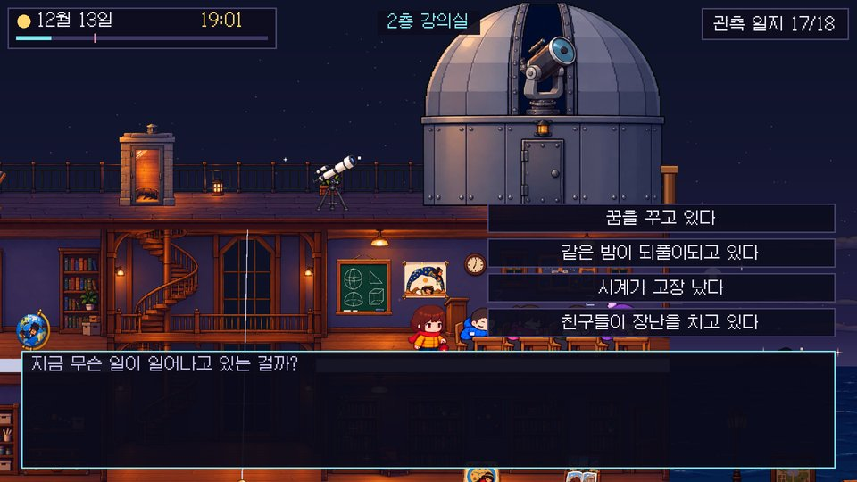
여섯 이야기는 순서가 정해져 있지 않습니다. 시간이 급한 순서는 이나(19:30 연락선) → 돌쇠(21:30 물때) → 휘(21:22~ 월식) → 테오(23:38~ 카노푸스)이고, 케티와 보리는 언제든 풀 수 있습니다.
여섯 손님을 모두 도우면 손님들이 물건으로 돌아가 하나씩 빛나고, 뒤늦게 책방 책장이 반짝입니다. "…책방의 책장을 살펴봐야겠어." 그전에는 "…책장이 흔들린다."뿐입니다. 책장 틈의 교재 마지막 쪽 "한 장 정리"(교재 179쪽) 5문항을 풀면 책장이 밀리고 돌계단이 나타납니다.
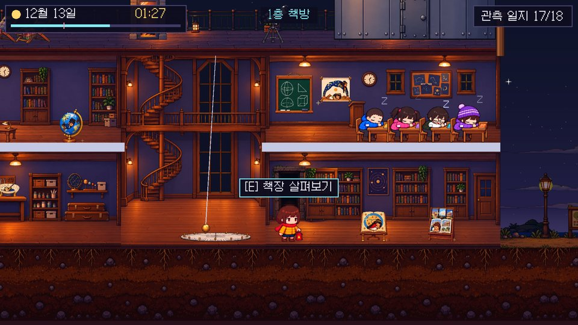
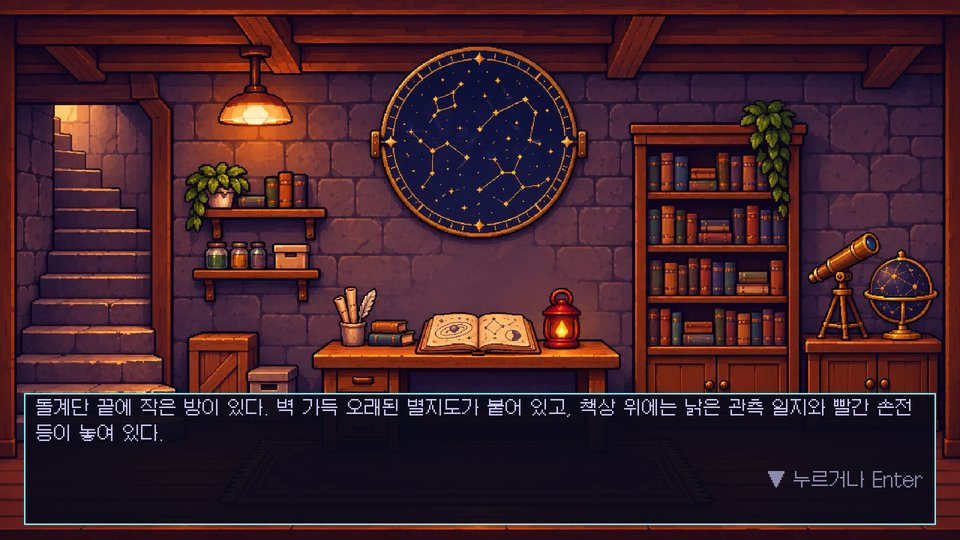
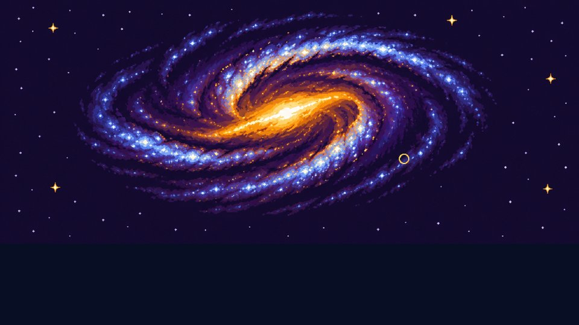
책상 위의 낡은 관측 일지와 빨간 손전등. 손잡이의 긁힌 자국까지 선생님께 받은 것과 똑같다.
일지를 펼쳐 본다. 오늘 밤 내가 적은 것과 똑같은 기록이다. 글씨도… 내 글씨다.
일지'하늘의 진짜 모습을 알아낸 너에게. 마지막 조각은, 네가 서 있는 곳 전체야.'
일곱 번째 조각을 얻으면 우주 주소 일곱 단계(교재 9장)가 차례로 펼쳐집니다.
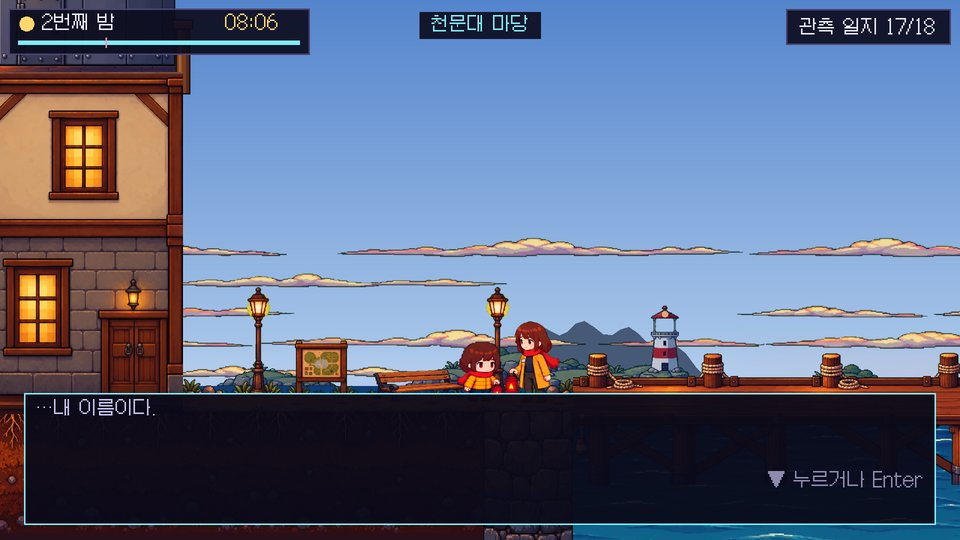
이번에는 아무것도 되감기지 않는다. 시계 바늘이 앞으로 간다. 친구들이 기지개를 켜며 깨어난다.
선생님잘 해냈구나. 긴 밤이었지?
손때 묻은 이름표의 흐렸던 글씨가, 이제는 읽힌다. …내 이름이다.
선생님나도 너만 할 때, 이 섬에서 이 밤을 보냈어. 그 손전등은 그때 '어른이 된 나'에게 받은 거야.
선생님이제 네 차례야. 언젠가 너도, 처음 별을 보러 온 아이에게 그 손전등을 건네주겠지.
선생님봐. 지구가 돌아서, 해가 동쪽에서 떠오르고 있어.
사건은 매 밤 같은 시각에 일어납니다. 2층 강의실 칠판에도 같은 시간표가 적혀 있습니다.
| 시각 | 곳 | 일어나는 일 |
|---|---|---|
| 15:30 | 마당 | 프롤로그 (첫 밤만). 선생님이 손전등을 건넴 |
| 17:00 | 2층 강의실 | 밤 시작. 보름달이 동쪽에서 떠오름 |
| 17:17 | 옥상 전망대 | 해넘이 (서쪽 바다) |
| 19:00 | 어디서나 | 두 번째 밤에는 이때까지 루프를 알아챔 |
| 19:30 | 항구 | 마지막 섬 연락선 출항 |
| 20:20 ~ 20:50 | 부두 쌍안경 | 연락선 선체가 수평선에 가려지고 돛대 등만 남음 |
| 21:22 | 옥상 달 망원경 | 부분 월식 시작 (사진 찍기 시작) |
| 21:30 | 항구 | 물때 끝. 이후 돌쇠는 떠날 수 없음 |
| 21:55 무렵 | 관측 의자 (북쪽) | 북두칠성 국자 끝이 산 위로 (북두칠성으로도 북극성 찾기) |
| 22:20 ~ 23:52 | 옥상 | 개기월식 (붉은 구릿빛 달, 은하수가 다시 드러남) |
| 23:38 ~ 03:16 | 돔 (남쪽) | 카노푸스가 남쪽 수평선 위에 |
| 00:50 | 옥상 | 월식 끝 |
| 07:30 | 어디서나 | 해돋이. 밤이 되감김 (진엔딩만 예외) |
언제든: 푸코 진자 기록, 공전 모형, 교재 읽기, 마당 벤치에서 30분/1시간 건너뛰기.
| 장치 (곳) | 하는 일 | 얻는 증거 |
|---|---|---|
| 해넘이 전망대 (옥상 서쪽) | 해가 오른쪽 아래로 비스듬히 서쪽 바다로 지는 모습 지켜보기 | 서쪽으로 지는 해 |
| 푸코 진자 (가운데 홀) | 위에서 본 눈금판에 흔들리는 방향을 기록하고, 1시간 뒤 다시 기록. 1시간에 약 8.4° (= 15° × sin 34°) | 돌아가는 진자 |
| 관측 의자 (옥상 북쪽) | 맨눈으로 북쪽 하늘. 북극성 찾기 두 방법(5배 늘이기), 1시간 장노출 사진. 카시오페이아로 찾은 북극성 표시는 잠시 뒤 사라져 북두칠성 방법에서 다시 찾아야 함 | 숨은 북두칠성, 북극성 찾기(2), 도는 하늘 |
| 부두 쌍안경 (항구) | 떠난 연락선이 지구 반지름 6,371 km 기준으로 아래부터 가려지는 모습 | 수평선 너머의 배 |
| 달 망원경 (옥상) | 약 40배로 본 달. 부분식 때 20분 넘는 간격으로 3장 찍기. 사진은 남쪽 하늘의 달 길(동→남→서)에 연속 사진처럼 쌓임 | 언제나 둥근 그림자 |
| 돔 LX200 16인치 (옥상) | 남쪽 하늘에서 별을 누르면 약 156배(시야 0.33°)로 확대: 카노푸스, 시리우스, 베텔게우스, 리겔(점으로 보임), 오리온대성운 M42 | 남쪽의 카노푸스 |
| 공전 모형 (창고) | 달과 자전축(23.5°/0°)을 바꾸며 한낮의 해 높이, 낮의 길이, 태양까지 거리, 햇빛이 퍼지는 넓이 비교 | 기울어진 자전축, 가장 가까운 날은 한겨울 |
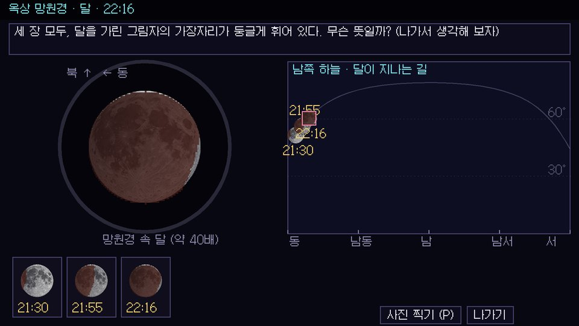
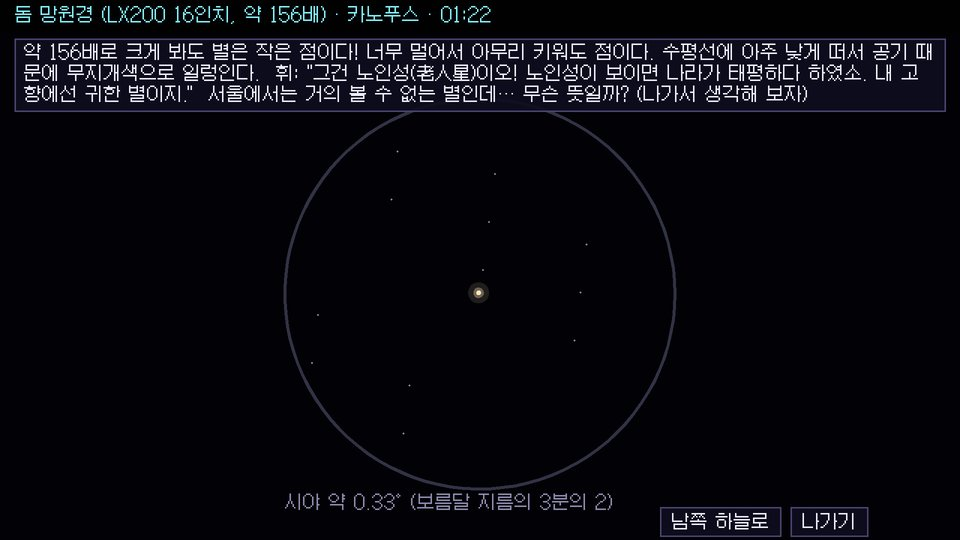
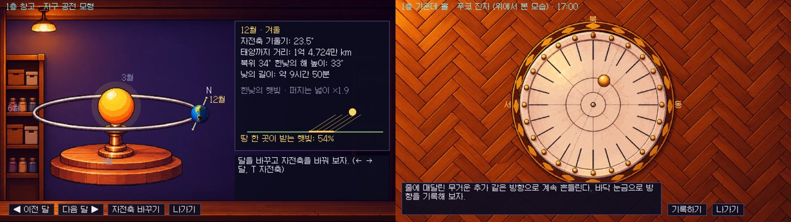
과학 교육에서 효과가 검증된 POE(Predict–Observe–Explain) 순서를 뼈대로 삼았습니다(White & Gunstone, 1992). 떠올려 답하는 과정이 기억을 강하게 만든다는 인출 연습 효과(Roediger & Karpicke, 2006)도 활용합니다. 퀴즈를 푸는 동안 시간은 멈춥니다.
| 장치 | 내용 |
|---|---|
| 틀리면 시간이 흐름 | 설명 퀴즈에서 틀릴 때마다 게임 시간 10분이 흐릅니다. 연락선·물때·월식 같은 마감이 다가오지만, 다음 밤에 다시 할 수 있어 좌절은 적습니다. 예측 퀴즈는 정답이 없으므로 해당하지 않습니다 |
| 깨달음 별 | 한 번에 맞히면 금별 ★★★, 힌트를 받고 맞히면 은별 ★★, 보기 2개에서 맞히면 동별 ★. 깨달음 카드와 관측 일지에 표시되고, 밤이 되풀이되어도 가장 좋은 별이 남습니다 |
| 교재 펼쳐 보기 | 같은 문제를 두 번 틀리면 "교재 ○장 펼쳐 보기" 단추가 생겨, 그 장을 퀴즈 위에 펼쳐 볼 수 있습니다 (진자 → 1장, 일주운동 → 2장, 월식 → 5장 등) |
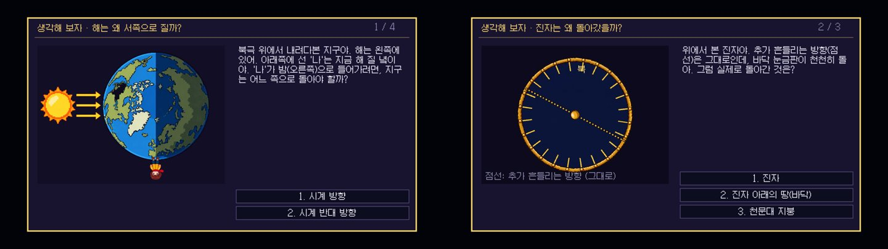
| 증거 | 설명 퀴즈 (요약) |
|---|---|
| 해넘이 | [그림: 북극 위에서 본 지구] 해 질 녘의 '나'가 밤으로 들어가려면 지구는? (시계 반대 방향) → 지구가 서→동으로 자전해서 해는 동→서로 지는 것처럼 보인다 |
| 푸코 진자 | 진자를 돌린 힘이 있었나? (없다) → [그림: 바닥판만 도는 모습] 돌아간 것은? (진자 아래의 땅) → 지구가 ( 자전 )한다 |
| 도는 하늘 | 교재 174쪽 자전 주기(24시간) → 별은 ( 북극성 )을 가운데 두고 돈다 → 1시간에 약 ( 15 )° |
| 숨은 북두칠성 | 봄·여름엔 북두칠성, 가을·겨울엔 카시오페이아 (교재 178쪽) |
| 북극성 찾기 | 두 방법 모두 ( 5 )배. 북극성이 길잡이인 까닭: 밤새 거의 움직이지 않아서 |
| 수평선 너머의 배 | [그림: 네모 지구와 둥근 지구] 교재 170쪽 짝 맞추기 → 쌍안경으로 봐도 아래가 안 보이는 까닭: 둥근 바다에 가려서 |
| 둥근 그림자 | [그림: 세모·동그라미·네모 지구] 교재 171쪽 "누구의 그림자일까요?" → 지구 그림자가 달을 가리는 ( 월식 ) |
| 카노푸스 | 남쪽으로 갈수록 남쪽 별은 더 높이 → 서울에서는 거의 안 보임, 이 섬·제주에서는 겨우 보임 → 평평하다면 어디서나 같은 별 |
| 계절 (2개) | 해가 높이 뜨는 6월, 햇빛이 모여서 데워짐, ( 자전축 ) 기울기 / 교재 175쪽 공전 주기(365일), 가장 가까운 1월 → 거리 때문이 아님 |
| 교재 쪽 | 교재 내용 | 게임에서 |
|---|---|---|
| 168 | 옛날 사람들의 지구 | 이나가 잠든 교재 지도 받침대, 여섯 손님의 믿음 |
| 169~170 | 배가 가라앉는 것처럼 보이는 만화, 지구 모양 ↔ 배 짝 맞추기 | 부두 쌍안경, 이나, 설명 퀴즈 |
| 171 | 월식 사진, "누구의 그림자일까요?" | 달 망원경, 휘, 설명 퀴즈 |
| 172~173 | 중력, 지구가 팽이처럼 돌면 낮과 밤 | 해넘이, 푸코 진자, 케티 |
| 174 | 자전, 북극성, 자전 주기 5지선다 | 관측 의자, 돌쇠, 설명 퀴즈 |
| 175 | 공전, 계절별 별자리, 공전 주기 5지선다 | 공전 모형, 보리, 설명 퀴즈 |
| 176~178 | 북쪽 하늘 별자리, 북극성 찾기 | 관측 의자 (두 가지 5배 방법) |
| 179 | 한 장 정리 빈칸 5문항 | 책방 비밀 책장을 여는 퀴즈 |
게임 속 1층 책방 교재(9장)에도 장마다 그림이 들어갑니다: 자전과 낮과 밤, 일주운동, 북극성 찾기, 수평선 너머의 배, 월식의 그림자, 남쪽 하늘의 별, 계절, 월식의 진행, 우주 속 우리의 주소. 교재에 없는 푸코 진자, 카노푸스, 근일점은 심화로 두었습니다.
| 칸 | 조각 | 얻는 방법 | 진엔딩 설명 |
|---|---|---|---|
| 1 | 지구 | 돌쇠 (사진 액자 뒤) | 하루에 한 번 자전하고, 일 년에 한 번 태양 둘레를 공전한다 |
| 2 | 태양계 | 케티 | 태양과 여덟 행성의 가족. 지구는 세 번째 행성 |
| 3 | 우리은하 | 이나 (점토판) | 별 수천억 개의 소용돌이. 태양은 가장자리 쪽 별 하나 |
| 4 | 국부은하군 | 휘 (죽간) | 우리은하, 안드로메다은하 등 수십 개 은하의 무리 |
| 5 | 처녀자리 초은하단 | 테오 | 은하군과 은하단 수백 개가 모인 더 큰 무리 |
| 6 | 라니아케아 초은하단 | 보리 | 하와이 말로 '헤아릴 수 없는 하늘'. 은하 약 10만 개의 흐름 (2014년 발표) |
| 7 | 관측 가능한 우주 | 별지기의 방 일지 | 빛이 우리에게 닿을 수 있는 가장 먼 곳까지 |
| 구분 | 조건 | 내용 |
|---|---|---|
| 진엔딩 (하나) | 손님 여섯 명을 모두 돕기 → 책방 책장의 "한 장 정리" 5문항 → 돌계단 내려가기 | 별지기의 방(내 글씨의 일지, 일곱 번째 조각) → 우주 주소 일곱 단계 → 되감기지 않는 아침 → 해를 마주 본 선생님 = 어른이 된 나 → 끝 카드 → 처음부터 다시 |
| 밤의 끝 (엔딩 아님) | 07:30 | 밤이 되감기고 다음 밤으로. 실패하거나 포기하는 결말은 없습니다 |
| 내용 | 근거 |
|---|---|
| 해·달·별 위치 | 게임이 날짜·위도·경도로 직접 계산 (세차: IAU 1976 공식, 은하 좌표: IAU 북은극 정의) |
| 푸코 진자 회전 속도 | 15° × sin(위도) = 15° × sin 34° ≈ 8.4°/시간 (푸코, 1851) |
| 수평선 너머로 가려지는 높이 | 눈높이 3 m의 수평선 약 6.2 km, 지구 반지름 6,371 km |
| 카노푸스와 위도 | 적위 −52.7°: 북위 37.3° 이북에서는 뜨지 않음 → 서울 거의 불가, 북위 34°에서 최고 고도 약 3° |
| 노인성 | 사마천 『사기』 「천관서」: 노인성이 보이면 나라가 태평하다 |
| 지구가 둥근 증거 | 아리스토텔레스 『천체에 관하여』: 월식의 둥근 그림자, 남쪽에서 보이는 별 |
| 바빌로니아 세계 지도 | 영국박물관 소장 점토판 (기원전 6세기 무렵) |
| 근일점·계절 | 지구는 1월 초 태양과 가장 가까움(약 1억 4,710만 km), 7월 초 가장 멂(약 1억 5,210만 km) |
| LX200 ACF 16인치 | 구경 406 mm, f/10, 초점거리 4064 mm. 26 mm 접안렌즈(겉보기 시야 52°)로 약 156배, 실제 시야 약 0.33° |
| 라니아케아 | Tully et al. (2014), Nature 513, 71–73 |
| POE 학습 | White, R. & Gunstone, R. (1992). Probing Understanding. Falmer Press |
| 인출 연습 효과 | Roediger, H. L. & Karpicke, J. D. (2006). Psychological Science 17(3), 249–255 |
| 지구 모양 오개념 | Vosniadou, S. & Brewer, W. F. (1992). Cognitive Psychology 24(4), 535–585 |
| 항목 | v1 (2026년 10월) | v2 (지금 게임) |
|---|---|---|
| 날짜·캠프 | 2026년 12월 20일, 겨울 별 캠프 | 2xxx년 12월 13일 개기월식 밤, 어린이천문대 겨울 캠프 |
| 시작 | 17:30 옥상, 쪽지는 1층 책상 | 15:30 프롤로그 → 17:00 강의실에서 깨어남, 쪽지는 2층 사무실에서 직접 찾음 |
| 손님이 깨어나는 곳 | 2층 전시실 유물 6점, 정해진 시각에 저절로 | 천문대 물건 6점, 플레이어가 말을 걸어야 깨어남. 다음 밤부터는 처음부터 돌아다님 |
| 루프 깨닫기 | 저절로 | 객관식으로 확인 |
| 깨달음 | 관측하면 바로 카드 | 예측 → 관찰 → 설명 퀴즈, 힌트 3단계 |
| 북쪽 하늘 | 망원경 | 맨눈 관측 의자 (망원경 시야로는 별자리가 다 안 들어오므로) |
| 월식 | 돔 기록 보관함의 옛 사진 3장 | 오늘 밤 월식을 옥상 망원경으로 직접 3장 찍기 |
| 돔 | 남쪽 하늘 망원경 | LX200 16인치로 별과 성운 확대, 카노푸스 → 노인성 |
| 지하로 가는 길 | 1층 일곱 칸 자물쇠 문 | 책방 비밀 책장 + 교재 179쪽 한 장 정리 |
| 엔딩 | 멀티 엔딩 5종 | 진엔딩 1종 (되감기지 않는 아침, 어른이 된 나) |
| 퀴즈 벌과 보상 | 없음 | 틀리면 10분, 금·은·동 깨달음 별, 교재 펼쳐 보기 단추 |
| 그림 | 시안 | 캐릭터 9종, 배경 전부, 관측 화면 배경, 퀴즈 그림, 교재 9장, 우주 주소 7장 (하늘은 계산해서 그림) |